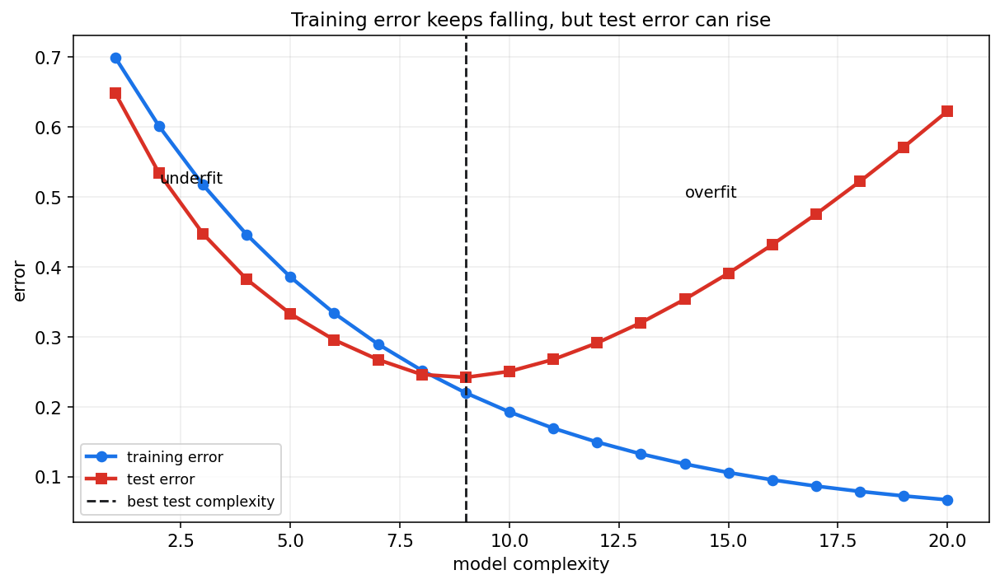
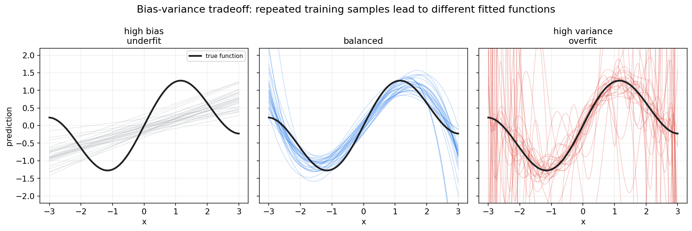
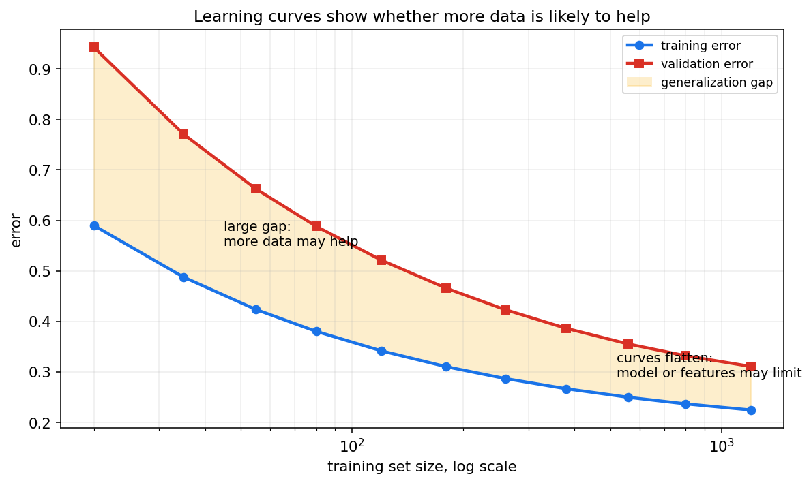
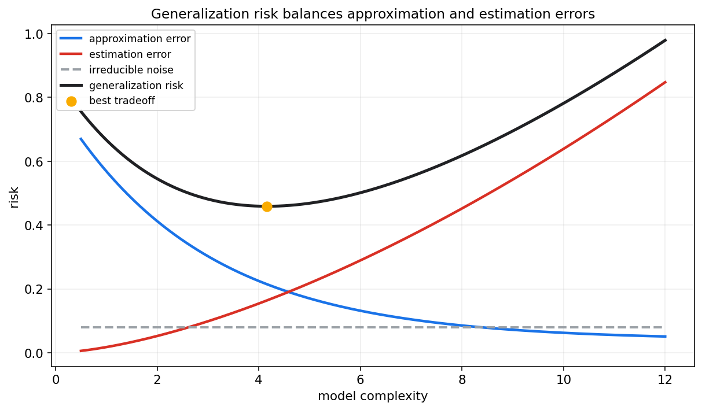

统计学习第十五章教程: 统计学习基础, 经验风险与泛化
从这一章开始, 视角从传统统计推断转向统计学习.
核心问题不再只是估计一个参数或检验一个假设, 而是:1. 怎样从有限训练数据中学出一个规则?
2. 这个规则在未来新数据上是否仍然有效?
3. 为什么训练误差低不等于模型好?
4. 模型复杂度, 正则化, 样本量和泛化误差是什么关系?统计学习的中心问题是泛化, 不是记住训练集.
0. 先看全章主线
flowchart LR
A["数据 D"] --> B["假设空间 H"]
B --> C["学习算法"]
C --> D["模型 f"]
D --> E["训练误差<br/>经验风险"]
D --> F["测试误差<br/>期望风险近似"]
E --> G["过拟合/欠拟合"]
F --> G
G --> H["偏差-方差权衡"]
H --> I["正则化"]
H --> J["验证集/测试集"]
H --> K["学习曲线"]一句话概括:
统计学习不是追求训练集上完美,
而是从有限样本中学习能推广到未来数据的规律.
1. 统计学习在研究什么
1.1 从统计推断到预测规则
前面章节常问:
- 参数是多少?
- 假设是否被拒绝?
- 后验分布长什么样?
统计学习常问:
给定输入 $X$, 能不能预测输出 $Y$?
我们希望学到一个函数:
让它在未来样本上也表现好.
1.2 数据生成视角
假设样本来自某个未知分布:
训练集为:
学习算法从训练集产生模型:
因为训练集是随机的, 学到的模型也是随机的.
1.3 泛化是核心
模型最终要服务未来数据.
所以最重要的不是:
而是:
这就是泛化问题.
2. 监督, 无监督, 半监督和自监督
2.1 监督学习
监督学习有输入和标签:
目标是学习从 $x$ 到 $y$ 的映射.
典型任务:
- 回归
- 分类
- 排序
- 序列标注
2.2 无监督学习
无监督学习只有输入:
目标是发现数据结构.
典型任务:
- 聚类
- 降维
- 密度估计
- 表示学习
2.3 半监督学习
半监督学习同时使用少量有标签数据和大量无标签数据.
它依赖一个直觉:
无标签数据也能告诉我们输入空间的结构.
2.4 自监督学习
自监督学习从数据本身构造监督信号.
例如:
- 遮住一部分文本让模型预测
- 图像增强后要求表示一致
- 音频或视频中预测未来片段
现代大模型和表示学习大量使用自监督思想.
3. 输入, 输出和假设空间
3.1 输入空间和输出空间
输入空间记为:
输出空间记为:
例如:
- 回归: $\mathcal{Y}=\mathbb{R}$
- 二分类: $\mathcal{Y}=\{0,1\}$
- 多分类: $\mathcal{Y}=\{1,\dots,K\}$
3.2 假设空间
假设空间是模型可能取值的集合:
例如:
- 所有线性函数
- 所有指定深度的决策树
- 某个神经网络结构下的所有权重
假设空间越大, 模型表达能力越强, 但也越容易过拟合.
3.3 学习算法
学习算法从训练数据中选择一个模型:
它可能通过:
- 最小化损失
- 最大化似然
- 后验推断
- 贪心树切分
- 梯度下降
来完成.
4. 损失函数, 期望风险和经验风险
4.1 损失函数
损失函数衡量预测错误:
常见例子:
- 平方损失: $(f(x)-y)^2$
- 绝对损失: $|f(x)-y|$
- 0-1 损失: $\mathbf{1}\{f(x)\ne y\}$
- 交叉熵损失
损失函数应和任务目标对齐.
4.2 期望风险
期望风险定义为:
它表示模型在真实数据分布上的平均损失.
理想目标是:
但真实分布 $P$ 不知道, 所以 $R(f)$ 也算不出来.
4.3 经验风险
训练集上的平均损失叫经验风险:
经验风险最小化 ERM:
4.4 ERM 和统计估计的关系
ERM 和前面章节是相通的:
- 平方损失 + 线性模型 -> 最小二乘
- 负对数似然损失 -> 极大似然
- 加正则项 -> MAP 或复杂度控制
所以统计学习不是另起炉灶, 而是在更强调泛化的语境下重新组织这些工具.
5. 训练误差与测试误差
5.1 训练误差
训练误差是模型在训练集上的损失:
它通常会随着模型复杂度增加而下降.
5.2 测试误差
测试误差是在独立测试集上的损失:
它更接近期望风险.
5.3 为什么训练误差不够
模型可能记住训练数据中的噪声.
这会让训练误差很低, 但测试误差变高.

图中训练误差持续下降, 测试误差先降后升.
测试误差升高的区域就是过拟合.
6. 过拟合与欠拟合
6.1 欠拟合
欠拟合指模型太简单, 无法表达真实规律.
表现为:
- 训练误差高
- 测试误差也高
- 模型遗漏重要结构
例如用直线拟合明显弯曲的函数.
6.2 过拟合
过拟合指模型过于贴合训练集, 包括噪声也被学进去.
表现为:
- 训练误差低
- 测试误差高
- 对数据扰动敏感
6.3 合适复杂度
好的模型不一定是训练误差最低的模型.
它应在表达能力和稳定性之间取得平衡.
7. 偏差-方差权衡
7.1 分解直觉
对平方损失, 测试误差可以直观分成:
其中:
- bias: 模型平均预测和真实函数的系统差距
- variance: 训练集变化导致预测变化的程度
- noise: 数据本身不可消除的随机性
7.2 图像直觉

左图模型太简单, 许多训练集下都偏离真实函数, 属于高偏差.
右图模型太灵活, 不同训练集得到的曲线差异很大, 属于高方差.
中间图在偏差和方差之间更平衡.
7.3 和前面章节的关系
第八章的 MSE 分解:
在统计学习中变成泛化误差分析的核心直觉.
8. 正则化
8.1 正则化的基本思想
正则化是在训练目标中加入复杂度惩罚:
其中:
- $\Omega(f)$ 衡量模型复杂度
- $\lambda$ 控制惩罚强度
8.2 正则化为什么有用
正则化会增加一点训练误差, 但可能降低测试误差.
它通过限制模型自由度来降低方差.
8.3 和贝叶斯 MAP 的关系
第十三章讲过:
负 log prior 就像正则项.
例如:
- L2 正则化对应高斯先验
- L1 正则化对应 Laplace 先验
这把统计学习, 优化和贝叶斯 MAP 连接起来.
9. 数据划分: 训练集, 验证集, 测试集
9.1 训练集
训练集用于拟合模型参数.
9.2 验证集
验证集用于选择超参数和模型结构, 例如:
- 正则化强度
- 树深度
- 学习率
- 网络结构
9.3 测试集
测试集用于最后一次评估.
它应该尽量模拟未来数据.
如果反复根据测试集结果调模型, 测试集就被污染, 不再是独立评估.
9.4 角色不能混
最常见错误是:
用测试集调参, 然后还把测试集分数当泛化估计.
这会高估模型表现.
10. 学习曲线
10.1 学习曲线是什么
学习曲线展示训练集大小变化时, 训练误差和验证误差如何变化.

10.2 如何解读
如果训练误差低, 验证误差高, 且两者差距大:
模型高方差, 更多数据可能有帮助.
如果训练误差和验证误差都高, 且接近:
模型高偏差, 需要更强模型或更好特征.
如果两条曲线都趋于平稳:
继续收集同类数据的边际收益可能有限.
11. 模型复杂度与样本复杂度
11.1 复杂度不是越高越好
模型复杂度提高会降低近似误差, 但会增加估计误差.

图中黑线是泛化风险.
最优点不是最简单模型, 也不是最复杂模型, 而是二者的折中.
11.2 样本复杂度
样本复杂度指达到某个泛化误差水平大约需要多少样本.
复杂模型通常需要更多数据来稳定估计.
如果数据量太小, 很大的假设空间会带来高方差.
11.3 数据质量同样重要
更多数据不一定更好.
如果新增数据:
- 标签噪声高
- 分布和目标不一致
- 样本偏差严重
- 重复或泄漏
它可能不会改善泛化.
12. 本章主线总结
第十五章可以压成几句话:
- 统计学习关心从样本学出能泛化的规则.
- 期望风险是真实目标, 经验风险是训练集近似.
- 训练误差低不等于测试误差低.
- 欠拟合来自模型太简单, 过拟合来自模型过度贴合训练数据.
- 偏差-方差权衡解释复杂度和泛化之间的张力.
- 正则化通过惩罚复杂度改善泛化.
- 验证集用于模型选择, 测试集用于最终评估.
- 学习曲线帮助判断更多数据是否有用.
核心提醒:
统计学习的目标不是赢训练集,
而是在未来数据上可靠地犯更少错误.
13. 实战清单与典型误区
13.1 实战清单
- 明确任务是回归, 分类还是排序.
- 选择与目标一致的损失函数.
- 划分训练集, 验证集和测试集.
- 只用训练集拟合参数.
- 用验证集选择超参数.
- 最后才用测试集评估.
- 同时看训练误差和验证误差.
- 用学习曲线判断偏差或方差问题.
- 用正则化控制复杂度.
- 检查数据泄漏和分布差异.
13.2 典型误区
- 把训练集分数高当成模型好
训练分数高可能只是记住了训练集.
- 只谈优化收敛, 不谈泛化
loss 收敛不代表未来样本表现好.
- 混淆验证集和测试集
验证集用于选择模型, 测试集用于最终报告.
- 以为复杂模型一定更强
数据不足时, 复杂模型更容易高方差.
- 忽略数据质量
泛化失败常常来自样本偏差, 标签噪声或数据泄漏.
14. 和前后章节的连接点
第八章的估计量 MSE 分解, 第十章的回归, 第十三章的 MAP 正则化, 都在本章汇入泛化问题.
第十六章会进入具体监督学习模型, 说明 Ridge, Lasso, SVM, 决策树和集成方法如何体现假设空间, 损失函数和正则化差异.
15. 本章收尾
统计学习把概率统计推向一个更工程化的问题:
模型不是为了拟合过去,
而是为了服务未来.
理解经验风险和泛化风险的差别, 是理解机器学习的第一道门.